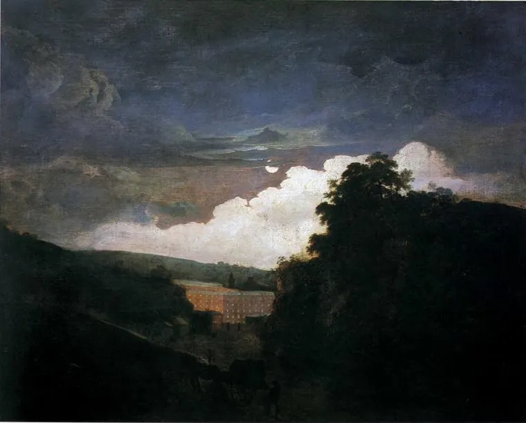

Quelque part dans un laboratoire de l'université du Wisconsin, des chercheurs financés par le Pentagone disséquent le cerveau d'un bruant à gorge blanche. Ce petit oiseau migrateur a une capacité étrange : il peut rester éveillé sept jours d'affilée sans déficit cognitif mesurable. Les militaires américains veulent comprendre comment. À court terme, ils espèrent créer un soldat capable de combattre une semaine sans dormir. À long terme, c'est autre chose qu'ils visent. C'est nous.
Cette anecdote, documentée par le philosophe Jonathan Crary dans son essai 24/7, n'a rien d'une métaphore. Elle dit littéralement ce que le capitalisme fait à la nuit depuis deux siècles. Il la considère comme un problème à résoudre. Un obstacle. Une interruption inacceptable dans la logique de production continue. Et quand on ne peut pas l'éliminer, on peut au moins l'éroder, la fragmenter, la rendre marchande, jusqu'à ce qu'elle ne soit plus tout à fait la nuit.
La nuit avait une forme
Avant la révolution industrielle, la nuit n'était pas simplement l'absence de jour. Elle avait une structure propre. L'historien Roger Ekirch a passé vingt ans à compiler des journaux intimes, des dépositions judiciaires, des traités médicaux d'Europe préindustrielle. Il y a découvert quelque chose que nous avons entièrement oublié. Les humains dormaient en deux temps. Un premier sommeil de quatre heures environ, puis une période de veille méditative qu'on appelait le "dorveille", une heure ou deux, puis un second sommeil jusqu'à l'aube. Durant ce dorveille, on priait, on faisait l'amour, on discutait des rêves qu'on venait de faire, parfois on lisait. Ce n'était pas de l'insomnie. C'était simplement la forme naturelle du repos humain quand il n'y avait pas de lumière artificielle.
Ce sommeil discontinu a disparu en l'espace de quelques décennies au XIXe siècle, au moment où l'éclairage artificiel s'est répandu dans les villes industrielles. La lampe à gaz, puis l'ampoule électrique, ont réinitialisé le rythme circadien des ouvriers. Couchers plus tardifs, sommeils plus courts, plus fragmentés. Ce n'était pas un progrès biologique. C'était une adaptation forcée aux exigences de la fabrique. Et il faut le dire sans nostalgie : la nuit préindustrielle n'était pas un âge d'or. Les paillasses étaient infestées de puces, le froid était partout, la mortalité infantile effrayante. Ekirch lui-même note que les gens modestes devaient vivre dans un état de fatigue chronique. Ce que nous avons perdu n'est pas un confort. C'est une structure biologique adaptée à nos corps.
Le capitalisme ne déteste pas le sommeil parce qu'il est inutile. Il le déteste parce qu'il est le seul espace où l'être humain ne produit rien, ne consomme rien, ne peut pas être atteint.
Deux philosophes permettent de mesurer l'ancienneté de ce mépris. John Locke, père du libéralisme politique, voyait déjà au XVIIe siècle le sommeil comme une "regrettable interruption dans l'accomplissement des priorités assignées aux hommes par Dieu". Une formule qui préfigure presque mot pour mot la rhétorique managériale d'aujourd'hui. Schopenhauer, à l'inverse, aura l'audace de retourner la hiérarchie : c'est dans le sommeil, disait-il, que se trouve "le vrai noyau de l'existence humaine". Le capitalisme industriel n'a jamais hésité entre ces deux pôles. Marx l'avait déjà compris : le sommeil est la dernière "barrière naturelle" à sa pleine réalisation. Crary le confirme deux siècles plus tard. Il est toujours possible de la saccager.
La fabrique de l'insomnie
Un tableau de 1782 résume mieux que n'importe quel traité ce qui s'est passé. Joseph Wright of Derby a peint Les filatures de coton d'Arkwright, la nuit. Une usine illuminée sous un clair de lune, ses fenêtres brillant d'une lumière artificielle qui concurrence les étoiles. On présente souvent cette image, reproduite dans des dizaines de manuels d'histoire économique, comme une célébration du progrès industriel. Crary y lit autre chose : l'annonce d'un temps abstrait, détaché des cycles naturels, où la production peut théoriquement ne jamais s'arrêter. La lune est encore là dans le tableau. Mais elle a déjà perdu.

Les filatures de coton d'Arkwright, la nuit — Joseph Wright of Derby, vers 1782-83. L'usine illuminée rivalise avec le clair de lune : la première image d'un monde où la production ne s'arrête plus jamais. Huile sur toile · Domaine public — via WikiArt
Ce temps abstrait, Crary l'appelle le "temps 24/7". Ce n'est pas une métaphore, c'est une description littérale. Un monde où les marchés ne ferment plus, où les flux d'information ne s'interrompent jamais, où la frontière entre jour et nuit a fini par être dissoute. L'expression "Open 24/7" n'est pas un simple argument commercial. C'est un programme anthropologique : l'être humain comme terminal toujours actif, qui ne se déconnecte jamais vraiment.
Ce programme a une généalogie concrète. Depuis les années 1980, la cocaïne et ses dérivés amphétaminiques permettent aux traders de Wall Street de prolonger leur présence au marché. Les jeunes analystes de Goldman Sachs dorment sous leur bureau, littéralement. Un stagiaire de 21 ans, Moritz Ehrardt, meurt en 2013 d'une crise d'épilepsie dans sa douche, après soixante-douze heures de travail consécutives. Thomas Hughes, 29 ans, banquier en fusion-acquisition, se défenestre en 2015 après des nuits à base d'alcool et de cocaïne. Goldman Sachs finit par "réformer" ses pratiques : les jeunes employés ne doivent plus être au bureau le vendredi soir après 21h. Le week-end, ils peuvent toujours travailler depuis chez eux.
La colonisation légale de la nuit
Ce qui s'est passé dans les grands magasins parisiens depuis les années 1990 est un cas d'école. Les Galeries Lafayette, le Printemps, Sephora, Virgin Mégastore ont commencé à ouvrir de plus en plus tard le soir. D'abord une nocturne par semaine, puis deux, puis jusqu'à minuit, sept jours sur sept. Illégalement, au regard du Code du travail.
Les syndicats ont bataillé. Le comité intersyndical du commerce de Paris a traîné Sephora et les Galeries Lafayette devant les tribunaux au début des années 2010. Et a gagné. Les juges ont interdit les nocturnes. Mais la victoire judiciaire a immédiatement déclenché la réaction politique. Bernard Arnault, PDG de LVMH, propriétaire de Sephora, a acheté des pages entières dans Le Figaro et Le Parisien pour dénoncer les syndicats. Des employées ont pleuré à l'audience. La direction a fait signer une pétition. En 2015, la loi Macron a fini par inventer une nouvelle catégorie juridique : le "travail en soirée", distinct du travail de nuit, moins encadré, applicable dans les "zones touristiques internationales".
Ils n'ont pas conquis la nuit par la force. Ils l'ont d'abord pratiquée illégalement, puis attendu que la loi suive.
La sociologie de ce qui se joue là est précise. Les salariés qui travaillent ces nocturnes ne sont pas les cadres. Ce sont les femmes à temps partiel, les étudiants en CDD, les agents de sécurité, les manutentionnaires. En France, 16,3% de la population active est exposée au travail de nuit. Et les catégories les plus concernées restent, dans leur grande majorité, les moins bien payées. Le travail de nuit n'est pas une contrainte partagée équitablement. C'est une extraction qui porte sur les corps de ceux qui n'ont pas les moyens de refuser.
La privatisation du sommeil
L'employeur et la plateforme numérique convergent vers la même heure volée, et ce n'est pas un hasard. Ils visent la même ressource. Le temps biologique non encore monétisé, ces heures où le corps devrait se régénérer, voilà la dernière frontière commune à l'entrepôt Amazon et à l'algorithme de Netflix. L'un opère via le droit du travail. L'autre via l'attention economy. Mais la cible reste identique. Extraire du temps humain au-delà de ce que le corps peut raisonnablement donner.
Netflix a publiquement déclaré que son principal concurrent n'était pas HBO, ni même Amazon. C'était le sommeil de ses utilisateurs. Reed Hastings, son fondateur, a formulé la stratégie avec une franchise glaçante : "We're competing with sleep." Les algorithmes des plateformes sont conçus, scientifiquement, pour rendre le moment de déposer l'écran plus difficile que celui de le saisir. Chaque notification, chaque autoplay, chaque "prochain épisode dans 5 secondes" attaque directement l'endormissement.
44% des jeunes hommes français de 15 à 19 ans ont déjà réduit volontairement leur temps de sommeil pour rester plus longtemps sur leur téléphone. Le phénomène a un nom, apparu en Chine et à Taïwan à la fin des années 2010 : la "revenge bedtime procrastination", la procrastination de vengeance à l'heure du coucher. Des millions de travailleurs, épuisés par des journées de dix à douze heures, refusent d'aller dormir malgré la fatigue. Parce que ces deux heures nocturnes sur leur téléphone sont les seules qu'ils vivent vraiment pour eux. C'est une forme de résistance. C'est aussi un piège. Ils finissent par céder ces heures de récupération aux plateformes qui les ont épuisés en premier lieu.
Crary compare ce mouvement à la privatisation de l'eau. L'eau en bouteille a transformé un bien commun en produit marchand en créant artificiellement de la rareté. Les industries numériques font exactement la même chose avec le sommeil : elles créent la rareté, puis vendent des solutions pour y remédier. La France est le deuxième consommateur de somnifères en Europe. Ces substances ne permettent pas vraiment de dormir. Elles permettent surtout d'oublier qu'on ne dort pas. Le marché crée le problème, vend le palliatif, et comptabilise les deux comme de la croissance.
L'inégalité par la nuit
Ce que révèle la sociologie du sommeil, c'est que la privation de nuit n'a rien d'universel. Elle est profondément inégalitaire. Les chiffres du baromètre de Santé publique France 2024 sont implacables sur ce point : le taux de courts dormeurs passe de 15,4% chez les personnes financièrement à l'aise à 29% chez celles en difficulté. Le double. 27% des ouvriers sont concernés. Dès la grande section de maternelle, les enfants d'ouvriers dorment déjà dix minutes de moins que les enfants de cadres. Et parmi les personnes souffrant d'insomnie chronique, 45,8% se trouvent en difficulté financière. Le psychiatre Jean-Arthur Micoulaud-Franchi résume le mécanisme d'une phrase : le sommeil est à la fois un symptôme et un facteur aggravant des problèmes de santé. Un cercle vicieux presque parfait. La précarité détruit le sommeil, et le manque de sommeil aggrave la précarité.
Ce gradient social se retrouve à l'échelle mondiale, avec une brutalité encore plus visible dans les économies en développement. En Inde, où 51% de la main-d'œuvre travaille plus de 49 heures par semaine, le PDG de Larsen & Toubro a demandé publiquement à ses employés de travailler 90 heures par semaine. Lors d'une réunion filmée, il a même ajouté : "Que faites-vous assis à la maison ? Combien de temps pouvez-vous regarder votre femme ?" La mort d'Anna Sebastian Perayil, comptable de 26 ans chez Ernst & Young à Pune, décédée quatre mois après son embauche d'un épuisement lié à sa charge de travail, a provoqué une enquête gouvernementale. Ce n'est pas un phénomène exotique. C'est l'aboutissement logique d'une culture du travail sans limite que l'Occident a exportée avec le reste de son modèle économique.
Le mythe du dirigeant qui dort peu fait partie de la même idéologie. Trump se vantait de dormir quatre heures. Macron, de "dormir peu". Thatcher dormait cinq heures. Le message est toujours le même : la privation de sommeil serait un choix héroïque chez les puissants, une faiblesse chez les autres. Le constat scientifique dit l'inverse. L'OMS et l'OIT documentent qu'au-delà de 55 heures de travail par semaine, le risque d'AVC augmente de 35% et celui de maladie cardiaque ischémique de 17%. Burn-out, dépression, obésité, diabète de type 2. Tous ces troubles ont une corrélation robuste avec la privation chronique de sommeil, documentée par le baromètre Santé publique France. La santé des travailleurs reste la dernière variable que le capitalisme accepte d'optimiser.
Le sommeil comme acte politique
Il serait tentant de conclure sur une note de résistance romantique. Dormir comme acte révolutionnaire, la sieste comme grève. Ce serait insuffisant. Ce que la lecture de Crary, d'Ekirch, de Klotz et des sociologues du travail nocturne permet de comprendre, c'est que la question du sommeil n'a rien d'individuel. Elle est structurelle. Elle appelle des réponses collectives.
La proposition d'inscrire un droit au sommeil dans la Constitution, formulée par le politiste Paul Klotz, n'a rien d'une fantaisie. Elle s'inscrit dans la lignée directe des luttes ouvrières du XIXe siècle, celles qui ont arraché la journée de huit heures, le repos dominical, l'interdiction du travail de nuit des enfants. Ces combats paraissaient utopiques à l'époque. Il leur a fallu un siècle pour se concrétiser. Et aujourd'hui, ils sont en train d'être progressivement défaits par les ordonnances Macron de 2017, qui ont facilité les accords d'entreprise dérogatoires, par la banalisation des horaires atypiques, par une désyndicalisation qui laisse les salariés seuls face à leurs plannings. En 2026, selon la feuille de route interministérielle sur le sommeil publiée en juin 2025, plus de 30% des enfants et jusqu'à 70% des adolescents ne dorment pas suffisamment. L'État le sait. Il n'en a pas encore fait une priorité politique.
Hannah Arendt insistait sur l'équilibre nécessaire entre exposition publique et retrait protégé, entre la lumière de la polis et l'obscurité du foyer. Le capitalisme de plateforme a détruit cet équilibre en absorbant à la fois la sphère privée et la possibilité de régénération. La chambre à coucher est devenue un espace de travail, de consommation, de surveillance. Il n'y a plus vraiment de retrait possible. Seulement un mode veille.
Et pourtant. Quelque chose dans le sommeil résiste encore. C'est le seul état humain qui ne peut pas être délégué, simulé, optimisé à l'infini. On ne peut pas dormir pour quelqu'un d'autre. On ne peut pas dormir plus efficacement au-delà d'un certain seuil. Le corps a ses propres exigences, et elles restent incompressibles. C'est précisément pour ça que le capitalisme le déteste. Et c'est précisément pour ça que ça vaut la peine de le défendre.
Ils ont volé la nuit.Le sommeil, lui, attend encore.
Sources et références
Ouvrages & essais
- Jonathan Crary — 24/7. Le capitalisme à l'assaut du sommeil (La Découverte, 2014 ; titre original : 24/7: Late Capitalism and the End of Sleep, 2013)
- Roger Ekirch — La grande transformation du sommeil. Comment la révolution industrielle a bouleversé nos nuits (Amsterdam, 2024 ; articles originaux 2001 et 2015)
- Luc Boltanski & Ève Chiapello — Le Nouvel Esprit du capitalisme (Gallimard, 1999)
Articles & études
- Paul Klotz — Le sommeil, la lutte sociale du siècle (Fondation Jean-Jaurès, 2025) — jean-jaures.org
- Pauline Grimaud — L'invention du "travail en soirée"… (Temporalités, OpenEdition, 2019) — journals.openedition.org/temporalites
- Éric Letonturier — Recension de 24/7 de Jonathan Crary (Hermès, La Revue, CNRS Éditions, 2015) — shs.cairn.info
- Sommeil : le capitalisme nuit (SNESup / Économie, n°728, novembre 2024) — snesup.fr
- Franck Olivar — "Le capitalisme crée un état d'insomnie généralisé", entretien avec Jonathan Crary (France Inter, janvier 2021) — radiofrance.fr
- Nicolas Framont — Le capitalisme veut-il la fin du sommeil ? (Frustration Magazine, décembre 2020) — frustrationmagazine.fr
- Simon Verdière — En finir avec le mythe du dirigeant qui dort peu (Mr Mondialisation, janvier 2026) — mrmondialisation.org
- Élisabeth Chamblain — Le sommeil a une histoire (En attendant Nadeau, août 2021) — en-attendant-nadeau.fr
- Jonathan Crary — À l'assaut du sommeil (Le Monde diplomatique, juin 2014) — monde-diplomatique.fr
- Un regard économique sur la nuit (Rhizome / ORSPERE-SAMDARRA, n°77, 2021) — orspere-samdarra.com
- Robin Verner — La grande dépression des cadres de Wall Street (Slate.fr, octobre 2015) — slate.fr
- L'Inde en quête de productivité : travailler plus ou travailler mieux ? (Le Petit Journal Bombay, janvier 2025) — lepetitjournal.com
Données statistiques
- Santé Publique France — Baromètre de Santé publique France 2024 (temps de sommeil, courts dormeurs, plainte d'insomnie, données socio-économiques et régionales) — santepubliquefrance.fr
- INSEE — Enquête sur le travail de nuit 2012 (−1h40 de sommeil pour les travailleurs de nuit)
- OMS / OIT — Étude sur le surmenage et les risques cardiovasculaires (risque AVC +35% au-delà de 55h/semaine)
- Organisation Internationale du Travail — Données sur le travail de nuit en France et en Inde
- INSV / OpinionWay — Enquête sur le sommeil des Français, réalisée décembre 2025, publiée le 10 mars 2026 (26e Journée du sommeil) — institut-sommeil-vigilance.org
- Pascale Santi — "6h50 par nuit en moyenne : le temps de sommeil ne cesse de reculer en France" (Le Monde, 10 mars 2026) — lemonde.fr
- Ministère de la Santé — Feuille de route interministérielle sur le sommeil, juin 2025 — sante.gouv.fr
- Jean-Arthur Micoulaud-Franchi (CHU de Bordeaux, président du conseil scientifique de l'INSV) — cité in Pascale Santi, Le Monde, 10 mars 2026
- Léger D., Zeghnoun A., Faraut B., Richard J.B. — "Le temps de sommeil, la dette de sommeil… des 18-75 ans : résultats du Baromètre de Santé publique France 2017" — Bull Épidémiol Hebd. 2019;(8-9):149-60
Références philosophiques mobilisées
- Karl Marx — Le Capital ("barrière naturelle", "anéantissement de l'espace par le temps")
- Hannah Arendt — Condition de l'homme moderne (équilibre exposition publique / retrait protégé)
- John Locke — Essai sur l'entendement humain (le sommeil comme "interruption regrettable")
- Arthur Schopenhauer — Le Monde comme volonté et comme représentation ("le vrai noyau de l'existence humaine")
- Michel Foucault — Surveiller et punir (dispositif, biopouvoir — mobilisés via Crary)